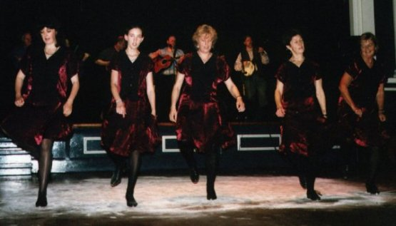
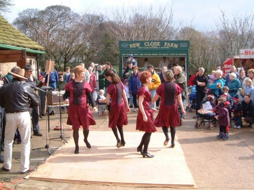

Well Heeled - Bakewell's Appalachian Dancers
The dance forms which developed in the Southern Appalachian mountains represent a fusion of traditional British step dancing with influences from the native Cherokee Indians and negro slaves. The end result is a highly energetic and visual dance style, which is performed with great gusto by Bakewell's own Well Heeled. Started by Jude Brown and Diane Bradwell (pictured below) numbers have grown steadily but we are always looking for new dancers .... particularly men! We meet 7.15 to 9.30 every Thursday, in the Town Hall Bakewell (and afterwards in the Manners pub for an informal music and dance session). Further contact details here.|  |
Photo: Eugene Judge |
The team is pictured above during a performance at Bakewell Town Hall. Dancers are (left to right) Vicky Keen, Bethan Griffith, Deborah Saville, Jude Brown and Diane Bradwell. Other appearances have included supporting Ira Bernstein and Riley Baugus, Bakewell Arts Festival, Darley Dale Arts Festival, Edale Country Day and Open Days at Whirlow Hall Farm in Sheffield. We are available for festivals, parties and events of all kinds. Other pictures and videos of the team in action below.
Well Heeled dance to live music provided by The Down Trodden String Band
|  | Left:
performing at the Whirlow Farm Open Day. Dancers (left to
right): Lois, Bethan, Des and Di. (Photo: Alex McGill) Below: Video of the team at Edale
Country Day in June 2002. (Video: Wendy Battersby) |